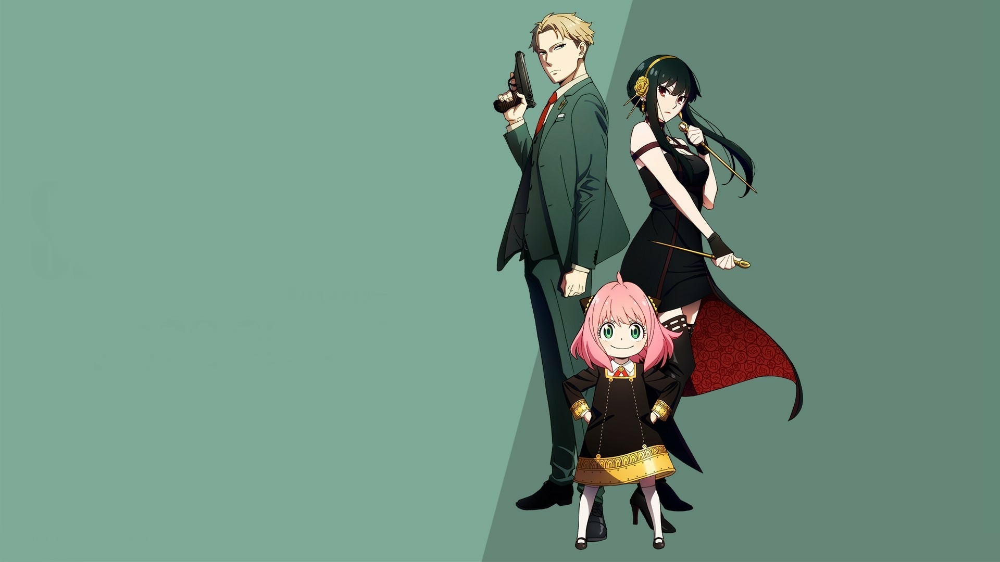
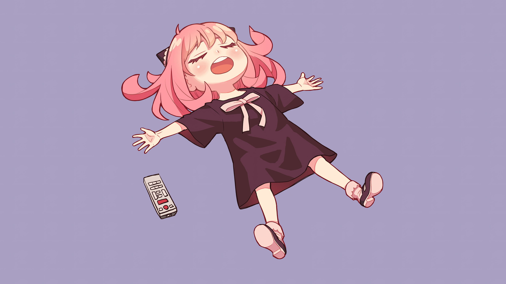
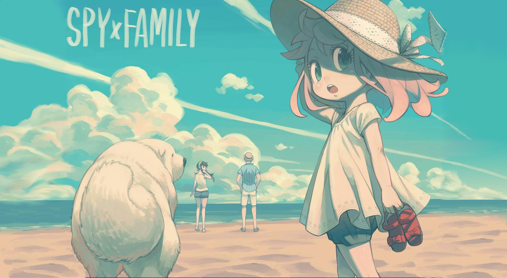
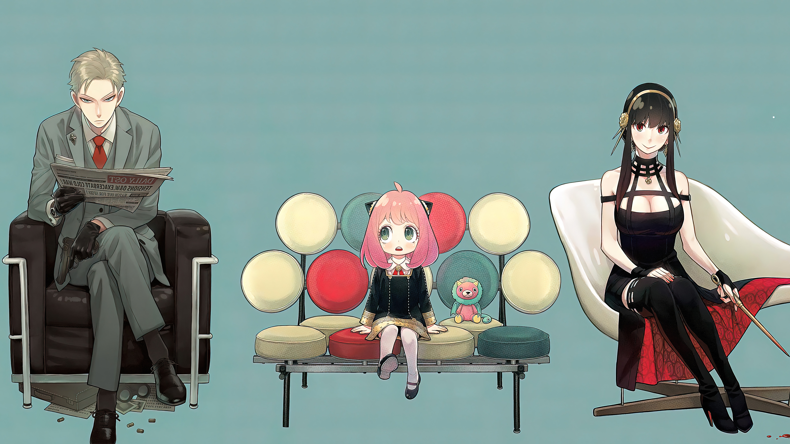
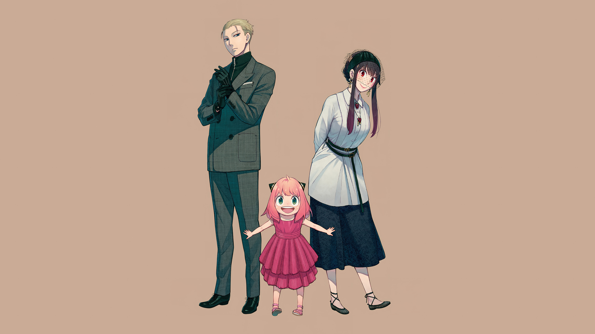
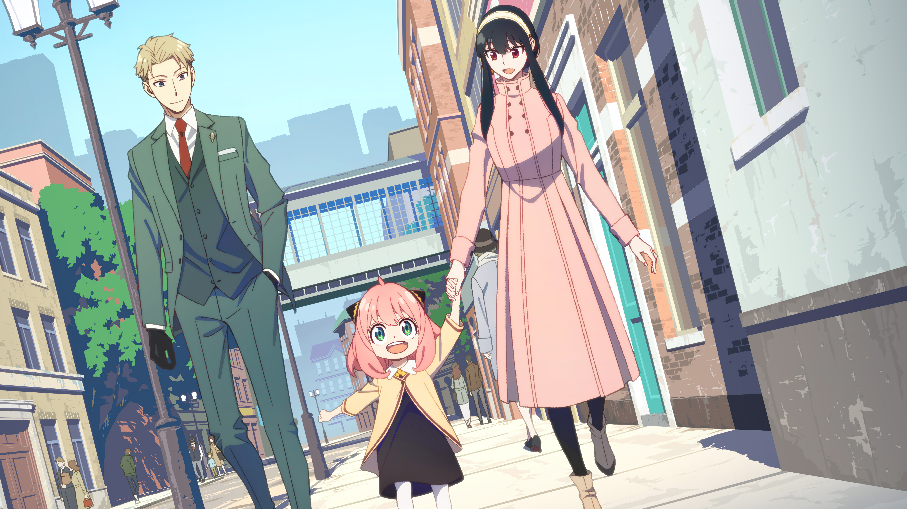

Spy × Family é uma série de mangá shōnen japonesa escrita e ilustrada por Tatsuya Endo. A história segue a vida de Twilight, um espião que precisa "formar uma família" de forma repentina para executar uma missão.